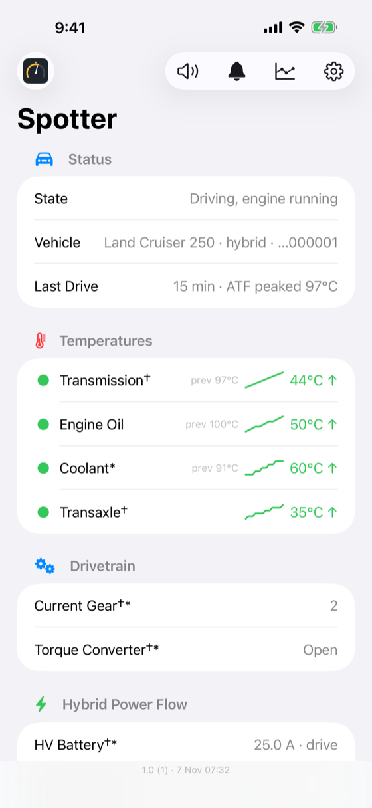
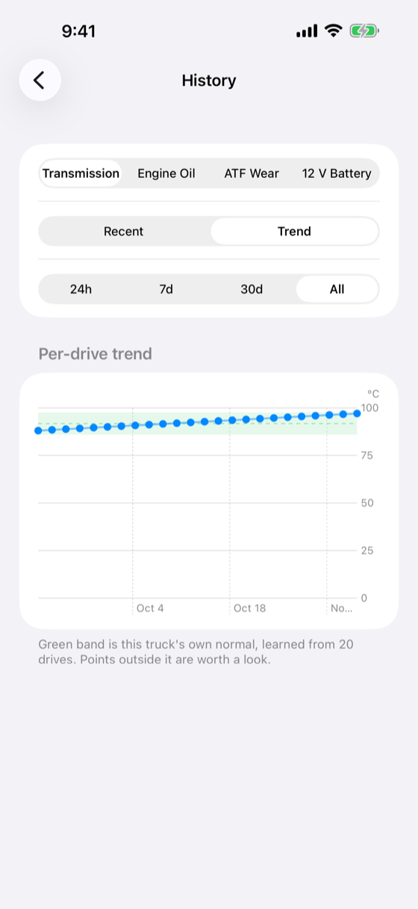

A co-driver that watches your truck.
Live temperatures, spoken alerts, and long-term health trends for the Toyota Land Cruiser 250 (2024+) — read directly from the vehicle over a Bluetooth OBD-II adapter.


- Transmission temperature, live. The gauge the truck doesn't give you — plus engine oil, coolant, intake and ambient air, and hybrid system data.
- It speaks up. Configurable voice alerts when a temperature crosses your thresholds — and they keep speaking over CarPlay and with the screen locked, so your eyes stay on the trail. Tap Speak Status, on the phone or the CarPlay screen, for a hands-free readout of where everything stands right now.
- Built for the head unit. A CarPlay Driving Task screen shows live transmission, oil and coolant temperature at a glance, with the same spoken status a tap away — no fishing for your phone while you drive.
- History and trends. Every drive is logged on your phone. Trend charts show when something starts running warmer than your truck's own learned normal.
- Battery and maintenance watch. Tracks 12 V resting voltage over time and flags a downward trend, counts how long the transmission runs hot, and keeps a service log so you know how far it's been since your last fluid change. It reports trends — it doesn't diagnose or predict failure.
- The right adapter, or a straight answer. Spotter checks your Bluetooth adapter on connect and tells you plainly if it can't read the truck's data — instead of failing silently.
- Try it with no hardware. Demo mode plays a real mountain-grade drive through the full app, charts and all.

It learns your truck's normal
Every completed drive adds a point. Spotter learns the band your transmission usually runs in, then shows you when a drive starts creeping above it — long before it's a number you'd notice glancing at a gauge. A measurement, not a diagnosis.
Available now on the App Store, for iPhone — CarPlay included. Free to try with live gauges and demo mode; a one-time Pro purchase (per vehicle, Family Sharing supported) unlocks automatic voice alerts, full history and trend charts, battery-health trends, and maintenance tracking. All data stays on your phone — see exactly what that means.